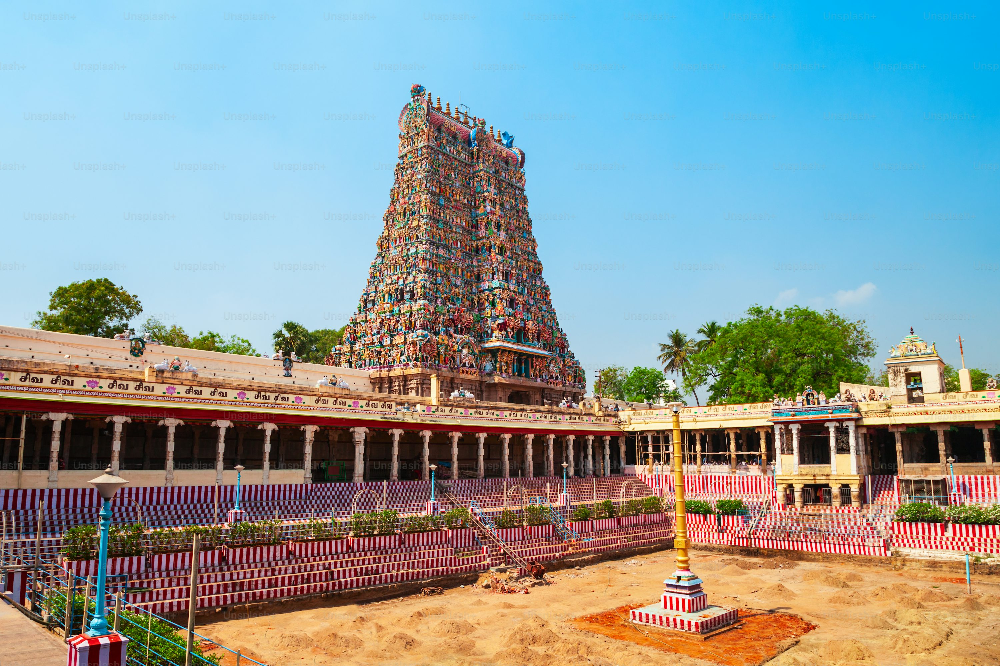

1.Meenakshi Amman Temple — Madurai, Tamil Nadu
Renowned for its 14 towering gopurams, the tallest standing over 170 ft, this magnificent Dravidian temple features more than 33,000 colorful sculptures and a stunning thousand-pillared hall that even produces musical tones when tapped
2.Konark Sun Temple — Konark, Odisha

The Konark Sun Temple is a 13th-century architectural marvel located in Konark, Odisha. Built by King Narasimhadeva I of the Eastern Ganga dynasty in 1250 CE, this temple is dedicated to the Hindu Sun God, Surya. Designed in the shape of a colossal chariot with 24 intricately carved wheels and pulled by seven majestic horses, it symbolizes the Sun God’s journey across the sky. The temple is renowned for its exquisite stone carvings, advanced engineering, and celestial alignment. Recognized as a UNESCO World Heritage Site, it stands as a grand testimony to India’s artistic and spiritual heritage.
3.Kedarnath Temple — Rudraprayag, Uttarakhand
The Kedarnath Temple is one of the most sacred Hindu shrines, located in the majestic Himalayas in Rudraprayag district, Uttarakhand. Dedicated to Lord Shiva, it is part of the Char Dham Yatra and one of the twelve Jyotirlingas of India. Believed to have been originally built by the Pandavas and later revived by Adi Shankaracharya in the 8th century, the temple stands at an altitude of 3,583 meters. Surrounded by snow-capped peaks and the Mandakini River, Kedarnath offers a deeply spiritual and serene experience. Despite harsh weather conditions, it attracts thousands of pilgrims every year.
4.Golden Temple (Harmandir Sahib) — Amritsar, Punjab
The Golden Temple, also known as Harmandir Sahib, is the holiest shrine of Sikhism, located in Amritsar, Punjab. Built in the 16th century by Guru Arjan Dev Ji, it symbolizes equality, humility, and spirituality. The temple’s upper floors are covered in pure gold, and it is surrounded by the sacred Amrit Sarovar (pool of nectar). Open to people of all faiths, the Golden Temple welcomes thousands daily and also houses the Guru Granth Sahib, the holy scripture of Sikhism. The Langar (community kitchen) here serves free meals to all, making it a true symbol of selfless service and devotion.